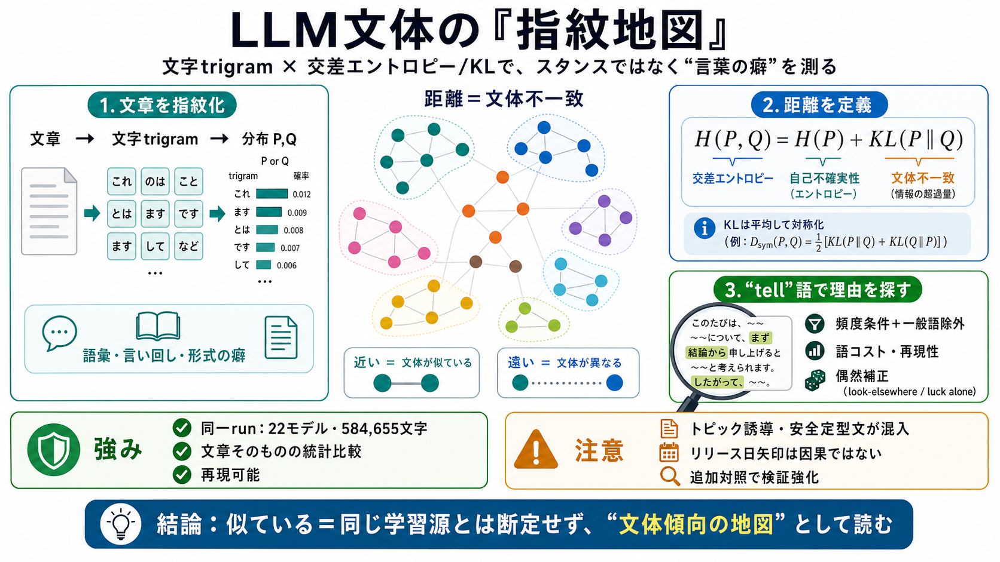

GPT-4 - API Pricing & Benchmarks | OpenRouter
OpenAI's flagship model, GPT-4 is a large-scale multimodal language model capable of solving difficult problems with gre…

OpenAI's flagship model, GPT-4 is a large-scale multimodal language model capable of solving difficult problems with gre…
Been playing with some other models via OpenRouter I tested Kimi K2.7 vs DeepSeek Pro V4 in a code review against the …
# I Routed 2,415 AI Agent Turns Across 6 Models. ### The full router has 8 model paths. Real usage was 94% cheaper than …
Compare GLM 4.5 from Z.ai to other AI models on key metrics including benchmarks, price, context length, and other model…
# 🤖 GLM-4.6 vs Kimi K2 vs DeepSeek V3. ## The Ultimate Comparison of Open-Weight AI Giants in 2025. 2025 has become the …